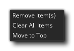
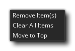

La lista de Windows reciente se puede abrir desde el menú de Windows y mostrará una lista breve (de forma predeterminada tiene un máximo de 10 elementos) de las ventanas que ha abierto anteriormente. Para comenzar, esta lista estará en blanco, pero cuando abra ventanas diferentes en el IDE (como un sprite o un script o un objeto, etc.) la lista se completará. Si necesita volver a cualquiera de estas ventanas abiertas previamente, simplemente haga clic con el botón izquierdo del mouse.  en el elemento de la lista y el espacio de trabajo se desplazará a la ventana. Si haces clic con el botón derecho del mouse
en el elemento de la lista y el espacio de trabajo se desplazará a la ventana. Si haces clic con el botón derecho del mouse  en un artículo, luego abrirá el siguiente menú: 
en un artículo, luego abrirá el siguiente menú: 
Aquí puede elegir eliminar un elemento (o elementos, como puede usar  +
+  o
o  +
+  para seleccionar múltiples) de la lista o puede hacer que se muevan a la parte superior de la lista. El menú RMB también tiene una opción adicional que le permite borrar la lista por completo. Vale la pena señalar que la lista de Windows reciente se puede acoplar a los lados del IDE y también puede ajustar ciertas preferencias para cambiar la forma en que se comporta.
para seleccionar múltiples) de la lista o puede hacer que se muevan a la parte superior de la lista. El menú RMB también tiene una opción adicional que le permite borrar la lista por completo. Vale la pena señalar que la lista de Windows reciente se puede acoplar a los lados del IDE y también puede ajustar ciertas preferencias para cambiar la forma en que se comporta.